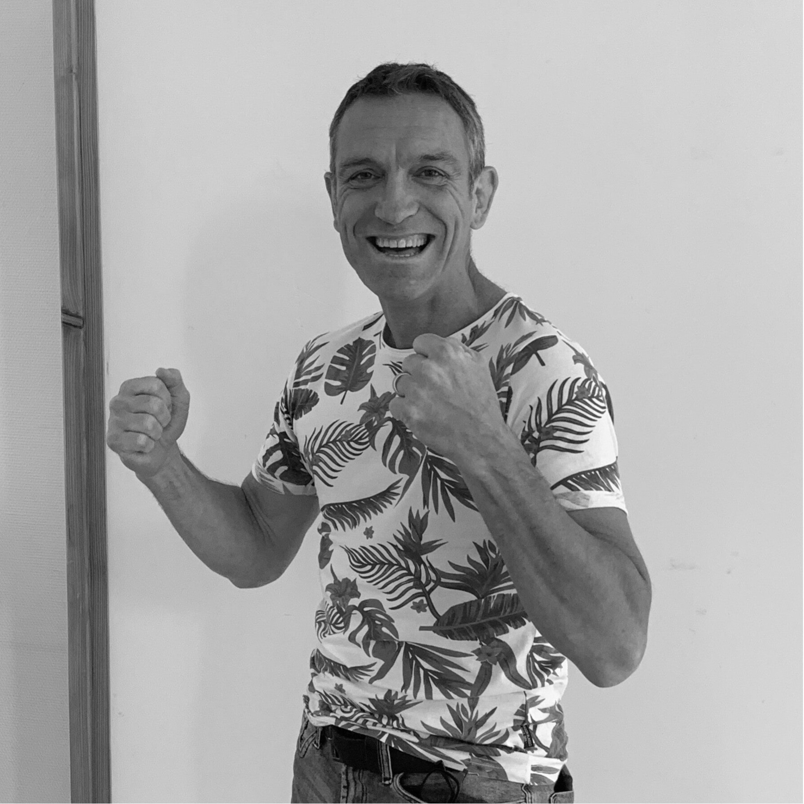

Yann Dussol
Surzur · SénéMoniteur · Kinésithérapeute
Pilier du club depuis 2006, plus de 40 ans de pratique. Sa double compétence de Coach A Sanda et d'instructeur fédéral en font un référent incontournable du Wushu breton.
Formation
Ceinture noire FFTK — 1990
CN 4e duan FFKDA & FFWAEMC — 2025
DIF — 2006 · CQP Arts Martiaux — 2012
Coach A Sanda & KMIX (MMA)
Brevet initiateur MMA 2e degré — 2020
Palmarès
~20 combats Sanda (16 victoires / 4 défaites)
Plusieurs titres Champion inter-régional Grand Ouest
3e au Championnat de France Sanda
2 combats Pancrace · 2 combats Grappling